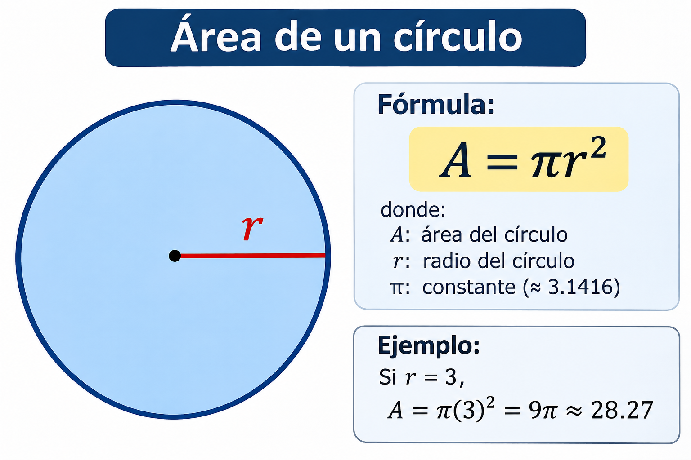
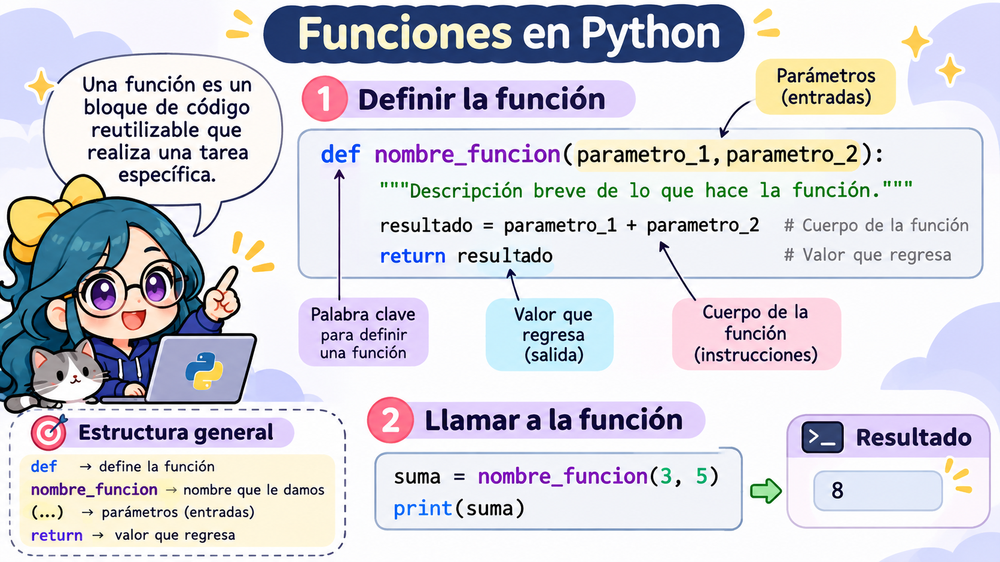
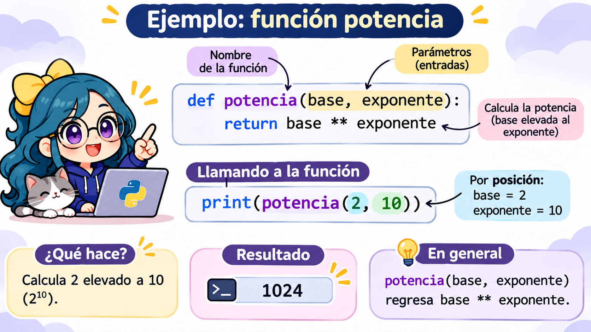
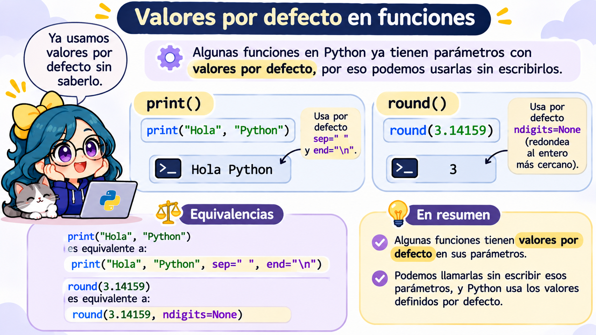
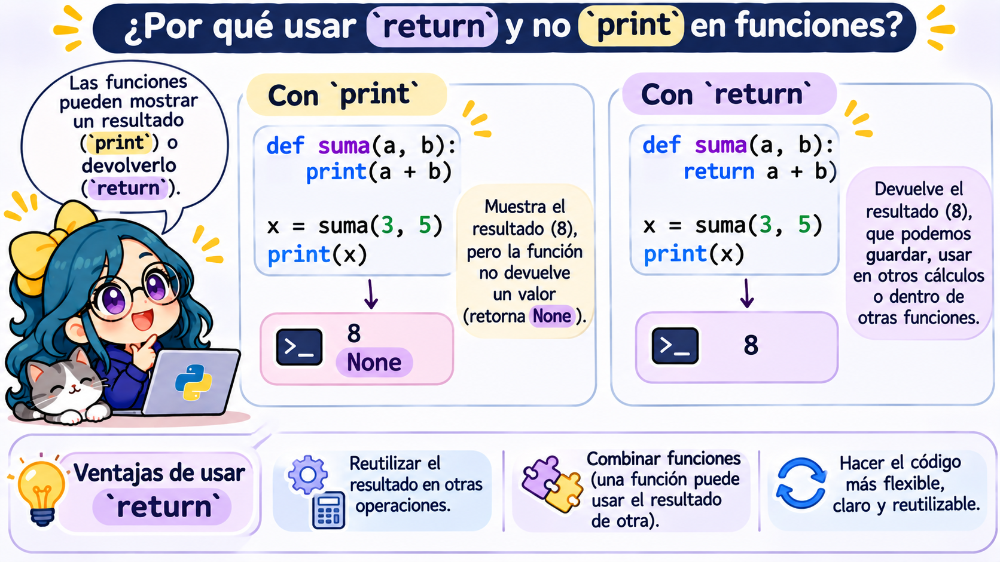
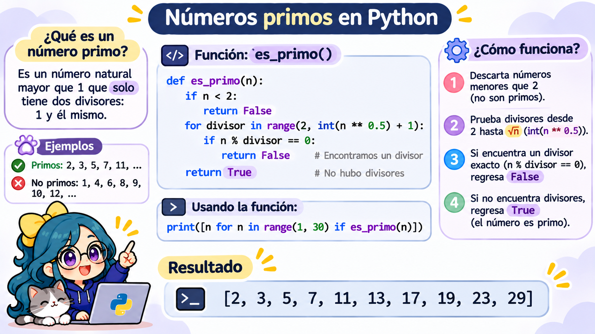
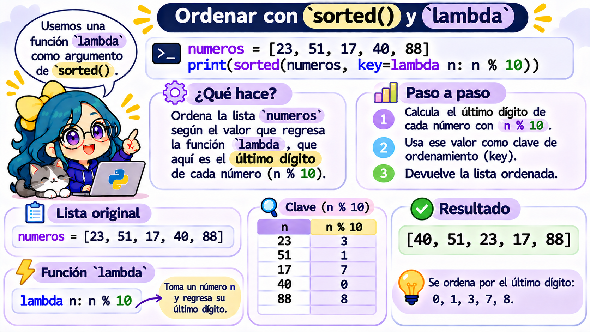
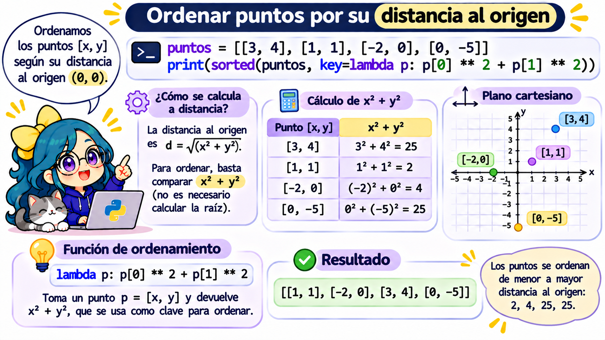
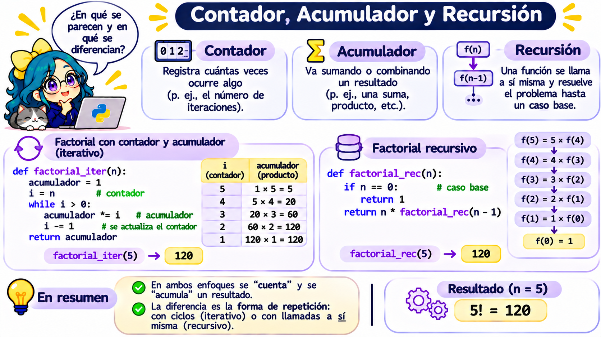

Código
import math
def area_circulo(radio):
return math.pi * radio ** 2
print(area_circulo(2))12.566370614359172Código
print(area_circulo(5))78.53981633974483Código
print(area_circulo(7.5))176.71458676442586Fecha: 24 de noviembre, 2026
Desde el inicio del curso hemos usado funciones: print(), len(), type(), sum(), max()… Son bloques de código con un nombre que realizan una tarea. En este capítulo aprenderemos a crear nuestras propias funciones y a escribirlas siguiendo buenas prácticas.
En este capítulo veremos:
def y return.return y print().lambda y recursión.Imagina que necesitas calcular el área de un círculo en varias partes de tu programa:

area_1 = 3.141592653589793 * 2 ** 2
area_2 = 3.141592653589793 * 5 ** 2
area_3 = 3.141592653589793 * 7.5 ** 2Si descubres un error en la fórmula, tendrás que corregirlo en cada línea. Con una función, la fórmula se escribe una sola vez:
import math
def area_circulo(radio):
return math.pi * radio ** 2
print(area_circulo(2))12.566370614359172print(area_circulo(5))78.53981633974483print(area_circulo(7.5))176.71458676442586| Ventaja | ¿Qué significa? |
|---|---|
| Reutilizar código | Escribes la lógica una vez y la usas muchas veces. |
| No repetirte | Principio DRY (Don’t Repeat Yourself): si algo cambia, lo cambias en un solo lugar. |
| Organizar | Divides un problema grande en tareas pequeñas con nombres claros. |
| Probar | Puedes verificar cada función por separado. |
| Leer | area_circulo(5) dice qué hace; math.pi * 5 ** 2 dice cómo. |
Es la misma idea que una función en matemáticas: \(f(x) = x^2 + 1\) recibe un valor \(x\) y regresa un resultado.

def nombre_funcion(parametro_1, parametro_2):
"""Descripción breve de lo que hace la función."""
resultado = parametro_1 + parametro_2 # Cuerpo de la función
return resultado # Valor que regresa| Parte | ¿Qué es? |
|---|---|
def |
Palabra reservada para definir una función. |
nombre_funcion |
El nombre de la función (en snake_case, como las variables). |
(parametro_1, parametro_2) |
Los parámetros: los datos que recibe. Puede no tener ninguno: (). |
: |
Los dos puntos, como en if y for. |
"""...""" |
El docstring: la documentación de la función (opcional, pero muy recomendable). |
| Cuerpo | Las instrucciones, con 4 espacios de indentación. |
return |
Termina la función y regresa un valor a quien la llamó. |
Definir una función no la ejecuta: solo la guarda con ese nombre. Para ejecutarla hay que llamarla, escribiendo su nombre con paréntesis:
def saludar(nombre):
return "¡Hola, " + nombre + "!"
mensaje = saludar("Ana") # Llamar a la función
print(mensaje)¡Hola, Ana!print(saludar("Luis"))¡Hola, Luis!Una función puede no recibir parámetros:
def mostrar_bienvenida():
print("Bienvenida al Taller de Cómputo")
mostrar_bienvenida()Bienvenida al Taller de CómputoLa función debe definirse antes de llamarla. Si la llamas antes de la línea def, obtendrás un NameError.
def potencia(base, exponente).potencia(2, 10).
def potencia(base, exponente):
return base ** exponente
print(potencia(2, 10)) # Por posición: base=2, exponente=101024print(potencia(exponente=10, base=2)) # Por nombre: el orden no importa1024print(potencia(10, 2)) # ¡Cuidado! base=10, exponente=2100Pasar los argumentos por nombre hace el código más claro cuando hay varios parámetros.
Un parámetro puede tener un valor por defecto, que se usa si no se envía ese argumento:
def potencia(base, exponente=2):
return base ** exponente
print(potencia(5)) # Usa exponente=2 -> 2525print(potencia(5, 3)) # Usa exponente=3 -> 125125Ya usamos valores por defecto sin saberlo: print() tiene sep=" " y end="\n", y round() tiene ndigits=None.

Los parámetros con valor por defecto van al final: def f(a, b=2) es correcto, pero def f(a=1, b) produce un SyntaxError.
return vs. print()Es la confusión más común al empezar:
print() |
return |
|
|---|---|---|
| ¿Qué hace? | Muestra un valor en la pantalla. | Regresa un valor a quien llamó la función. |
| ¿Se puede guardar el resultado? | No. | Sí: x = funcion(). |
| ¿Termina la función? | No. | Sí, inmediatamente. |

def doble_con_print(x):
print(x * 2)
def doble_con_return(x):
return x * 2
a = doble_con_print(5) # Muestra 10, pero no regresa nada10print("a =", a) # Nonea = Noneb = doble_con_return(5) # No muestra nada, regresa 10
print("b =", b) # 10b = 10print(b + 1) # Podemos seguir usando el resultado11Una función sin return regresa None. Por eso, las funciones que calculan algo deben usar return, y dejar el print() para quien las llama.
Una función puede regresar varios valores separados por comas. Python los agrupa en una tupla, que podemos desempaquetar:
def division_entera(dividendo, divisor):
cociente = dividendo // divisor
residuo = dividendo % divisor
return cociente, residuo
cociente, residuo = division_entera(17, 5)
print("Cociente:", cociente, " Residuo:", residuo)Cociente: 3 Residuo: 2print(division_entera(17, 5)) # (3, 2): una tupla(3, 2)return termina la funciónDespués de return, la función termina, aunque haya más líneas. Esto permite salir en cuanto conocemos la respuesta:
def es_primo(n):
if n < 2:
return False
for divisor in range(2, int(n ** 0.5) + 1):
if n % divisor == 0:
return False # Encontramos un divisor: ya no es primo
return True # No hubo divisores
print([n for n in range(1, 30) if es_primo(n)])[2, 3, 5, 7, 11, 13, 17, 19, 23, 29]
Esta versión solo prueba divisores hasta \(\sqrt{n}\). ¿Por qué basta? Si \(n = a \times b\) con \(a \le b\), entonces \(a \le \sqrt{n}\): si \(n\) tiene algún divisor, encontraremos uno antes de llegar a \(\sqrt{n}\). Así, para \(n = 97\) revisamos 8 divisores en lugar de 95.
Compara con el ejercicio de números primos del capítulo de ciclos. Para que la comparación sea justa, en ambos casos probamos todos los divisores de 2 a \(n - 1\):
Con ciclos (capítulo de ciclos)
n = 97
es_primo = n > 1
for divisor in range(2, n):
if n % divisor == 0:
es_primo = False
break
print(n, "es primo:", es_primo)Con una función
def es_primo(n):
if n < 2:
return False
for divisor in range(2, n):
if n % divisor == 0:
return False
return True
print(97, "es primo:", es_primo(97))Con la función ya no necesitamos la variable es_primo ni break: en cuanto encontramos un divisor, return False termina la función. Además, podemos reutilizarla con cualquier número sin copiar el ciclo.
es_primo()?
Lee la función por pasos. Cada paso empieza en el comentario # Paso y termina justo antes del siguiente:
def es_primo(n):
# Paso 1: descartar los números menores que 2
if n < 2:
return False # 0 y 1 no son primos: la función termina aquí
# Paso 2: probar cada divisor, desde 2 hasta n - 1
for divisor in range(2, n):
# Paso 3: ¿el divisor es exacto?
if n % divisor == 0:
return False # Encontramos un divisor: termina aquí
# Paso 4: el ciclo terminó sin encontrar divisores
return True # n es primo
print(97, "es primo:", es_primo(97))n < 2. Los números 0 y 1 no son primos. return False termina la función y no se ejecuta nada más.for recorre divisor = 2, 3, 4, ..., n - 1.n % divisor == 0, el residuo es 0 y divisor divide a n. return False termina la función y el ciclo a la vez: por eso ya no necesitamos break.return True si el ciclo terminó completo sin encontrar ningún divisor.Por ejemplo, con es_primo(91): el paso 1 no aplica, el ciclo prueba 2, 3, 4, 5, 6 y en el 7 encuentra que 91 % 7 == 0, así que regresa False. Con es_primo(97) ningún divisor funciona, el ciclo termina y regresa True.
Un docstring es un texto entre triples comillas justo debajo de la línea def. Explica qué hace la función, qué recibe y qué regresa. Es lo que muestra help():
def area_triangulo(base, altura):
"""Calcula el área de un triángulo.
Parámetros:
base (float): longitud de la base.
altura (float): altura del triángulo.
Regresa:
float: el área, base * altura / 2.
"""
return base * altura / 2
help(area_triangulo)Help on function area_triangulo in module __main__:
area_triangulo(base, altura)
Calcula el área de un triángulo.
Parámetros:
base (float): longitud de la base.
altura (float): altura del triángulo.
Regresa:
float: el área, base * altura / 2.Las anotaciones de tipo (type hints) indican qué tipo de dato espera cada parámetro y qué tipo regresa la función. Python no las verifica, pero hacen el código más claro:
def promedio(datos: list) -> float:
"""Regresa el promedio de una lista de números."""
return sum(datos) / len(datos)
print(promedio([8, 9, 10]))9.0datos: list significa “se espera una lista” y -> float significa “regresa un decimal”.
Las variables creadas dentro de una función son locales: solo existen mientras la función se ejecuta.
def calcular_iva(precio):
tasa = 0.16 # Variable local
return precio * tasa
print(calcular_iva(100))16.0print(tasa) # NameError: tasa solo existía dentro de la funciónNameError: name 'tasa' is not definedUna función puede leer una variable global (definida fuera de todas las funciones), pero depender de ella es una mala práctica: es mejor pasarla como parámetro.
TASA_IVA = 0.16 # Constante global
def calcular_iva(precio, tasa=TASA_IVA):
return precio * tasa
print(calcular_iva(100))16.0print(calcular_iva(100, tasa=0.08))8.0| Variable local | Variable global | |
|---|---|---|
| ¿Dónde se crea? | Dentro de una función. | Fuera de todas las funciones. |
| ¿Dónde existe? | Solo dentro de esa función. | En todo el programa. |
| Recomendación | Úsalas libremente. | Úsalas solo para constantes (MAYUSCULAS). |
Una función no sabe con qué datos la llamarán. Siguiendo lo que vimos en el capítulo de buenas prácticas, una buena función valida sus argumentos al inicio y lanza un error claro con raise si son incorrectos:
def factorial(n):
"""Regresa n! para un entero n >= 0."""
# Paso 1: validar el TIPO de n (debe ser un entero)
if not isinstance(n, int):
raise TypeError("n debe ser un número entero") # Ej. factorial(2.5): la función se detiene aquí
# Paso 2: validar el VALOR de n (no puede ser negativo)
if n < 0:
raise ValueError("n no puede ser negativo; se recibió " + str(n)) # Ej. factorial(-3)
# Paso 3: calcular n! = 1 × 2 × 3 × ... × n
resultado = 1 # Empezamos en 1 (así 0! = 1 y 1! = 1)
for i in range(2, n + 1): # i toma los valores 2, 3, ..., n
resultado *= i # Equivale a: resultado = resultado * i
# Paso 4: regresar el resultado
return resultado
print(factorial(5)) # 1 × 2 × 3 × 4 × 5 = 120120print(factorial(-3)) # Lanza ValueError: n no puede ser negativoValueError: n no puede ser negativo; se recibió -3Quien llama a la función puede atrapar el error con try / except:
try:
print(factorial(-3))
except ValueError as error:
print("No se pudo calcular:", error)No se pudo calcular: n no puede ser negativo; se recibió -3Una función se prueba llamándola con valores cuya respuesta ya conocemos. Con assert, la prueba no muestra nada si todo está bien y se detiene si algo falla:
assert factorial(0) == 1
assert factorial(1) == 1
assert factorial(5) == 120
assert es_primo(2) and es_primo(97)
assert not es_primo(1) and not es_primo(91)
print("Todas las pruebas pasaron ✅")Todas las pruebas pasaron ✅Escribe las pruebas al mismo tiempo que la función e incluye los casos límite: 0, 1, números negativos, listas vacías. Si más adelante modificas la función, vuelve a ejecutar las pruebas para verificar que no rompiste nada.
lambdaEn Python, las funciones también son objetos: se pueden guardar en variables y enviar como argumentos a otras funciones. Ya lo hicimos en la 🐍 Actividad 2 con max(set(datos), key=datos.count).
def ultimo_digito(n):
return n % 10
numeros = [23, 51, 17, 40, 88]
print(sorted(numeros, key=ultimo_digito)) # Ordenar por el último dígito[40, 51, 23, 17, 88]lambda?Una función lambda es una forma corta de escribir una función sin nombre, en una sola línea. Estas dos funciones hacen exactamente lo mismo:
Con def
def ultimo_digito(n):
return n % 10Con lambda
lambda n: n % 10| Parte | ¿Qué es? |
|---|---|
lambda |
Palabra reservada para crear una función (como def, pero sin nombre). |
n |
Los parámetros, antes de los dos puntos y sin paréntesis. Puede haber varios: lambda a, b: a + b. |
n % 10 |
Una sola expresión, que es el valor que regresa. No se escribe return. |
Muchas veces necesitamos una función una sola vez, solo para enviarla como argumento. Con def hay que inventarle un nombre y escribirla en otro lugar; con lambda la escribimos justo donde se usa:
# Mismo resultado que sorted(numeros, key=ultimo_digito), sin definir ultimo_digito
print(sorted(numeros, key=lambda n: n % 10))[40, 51, 23, 17, 88]El argumento key= de sorted(), max() y min() recibe una función que se aplica a cada elemento: Python ordena (o compara) usando el valor que regresa esa función, pero muestra los elementos originales.

Cuando una función corta se usa una sola vez como argumento. Por ejemplo:
# Ordenar puntos [x, y] por su distancia al origen (basta comparar x² + y²)
puntos = [[3, 4], [1, 1], [-2, 0], [0, -5]]
print(sorted(puntos, key=lambda p: p[0] ** 2 + p[1] ** 2))[[1, 1], [-2, 0], [3, 4], [0, -5]]
También sirve con nuestras propias funciones que reciben otra función. Aquí tabla() evalúa cualquier función matemática \(f(x)\), y con lambda le enviamos la función sin tener que definirla antes:
def tabla(f, valores):
"""Muestra f(x) para cada x en valores."""
for x in valores:
print("f(", x, ") = ", f(x), sep="")
tabla(lambda x: x ** 2 - 1, [0, 1, 2, 3]) # f(x) = x² - 1f(0) = -1
f(1) = 0
f(2) = 3
f(3) = 8print()tabla(lambda x: 2 ** x, [0, 1, 2, 3]) # f(x) = 2^xf(0) = 1
f(1) = 2
f(2) = 4
f(3) = 8if con varias ramas, un for, validaciones): lambda solo admite una expresión. Usa def.def, que además permite escribir un docstring.key=abs en lugar de key=lambda x: abs(x).cuadrado = lambda x: x ** 2 # Funciona, pero no es buena práctica
print(cuadrado(9))81def cuadrado(x): # Mejor: tiene un nombre claro y se puede documentar
"""Regresa x al cuadrado."""
return x ** 2
print(cuadrado(9))81print(sorted([-7, 3, -1, 5], key=abs)) # abs ya existe: no hace falta lambda[-1, 3, 5, -7]Regla práctica: lambda es una función desechable de una línea que escribes justo donde la envías como argumento. Para todo lo demás, usa def.
Una función recursiva se llama a sí misma. Es útil para definiciones matemáticas recursivas, como el factorial: \(n! = n \cdot (n-1)!\) con \(0! = 1\).
def factorial_recursivo(n):
if n == 0: # Caso base: detiene la recursión
return 1
return n * factorial_recursivo(n - 1) # Caso recursivo
print(factorial_recursivo(5)) # 5 * 4 * 3 * 2 * 1 * 1 = 120120Toda función recursiva necesita un caso base; sin él, se llamaría a sí misma indefinidamente hasta producir un RecursionError.
En el capítulo de ciclos calculamos \(5!\) con un acumulador. La recursión resuelve el mismo problema con las mismas ideas (un valor inicial, algo que cambia en cada repetición y una condición para parar), pero las organiza de otra forma:
Con un ciclo y un acumulador
def factorial_ciclo(n):
resultado = 1 # ACUMULADOR: inicia en 1
for i in range(2, n + 1): # CONTADOR: i = 2, 3, ..., n
resultado = resultado * i # ACUMULADOR: se actualiza
return resultado # Se usa el ACUMULADORCon recursión
def factorial_recursivo(n): # n: CONTADOR (baja)
if n == 0: # El CONTADOR llegó a 0
return 1 # Valor inicial (como
# inicializar el ACUMULADOR)
# No hay variable ACUMULADORA: n * ... queda pendiente
# n - 1 actualiza el CONTADOR para la siguiente llamada
return n * factorial_recursivo(n - 1)Cada parte del ciclo tiene su equivalente en la función recursiva:
| Papel | Ciclo con acumulador | Recursión |
|---|---|---|
| Valor inicial (el neutro del producto) | resultado = 1, antes del ciclo |
return 1 en el caso base, al final de las llamadas |
| Lo que cambia en cada repetición | El contador i sube: 2, 3, 4, 5 |
El parámetro n baja: 5, 4, 3, 2, 1, 0 |
| Cuándo parar | Cuando range() se termina |
Cuando n == 0 (caso base) |
| Dónde se acumula | En la variable resultado |
En las multiplicaciones pendientes, que se resuelven al regresar |
| Cuándo se multiplica | De ida: en cada vuelta del ciclo | De regreso: cuando cada llamada recibe su return |
Con el ciclo, el acumulador guarda el resultado parcial en cada vuelta:
resultado = 1 # ACUMULADOR: valor inicial (neutro del producto)
for i in range(2, 6): # CONTADOR: i = 2, 3, 4, 5
resultado = resultado * i # ACUMULADOR: guarda el producto parcial
print("i =", i, " resultado =", resultado)i = 2 resultado = 2
i = 3 resultado = 6
i = 4 resultado = 24
i = 5 resultado = 120Con la recursión no hay variable acumuladora. Cada llamada se queda esperando el resultado de la siguiente, y las multiplicaciones se hacen al regresar, cuando se llega al caso base. Agregamos print() para ver la ida y el regreso:
def factorial_traza(n): # n: CONTADOR (5, 4, 3, 2, 1, 0)
if n == 0: # El CONTADOR llegó a 0: caso base
print("Caso base: factorial(0) regresa 1")
return 1 # Valor inicial (como inicializar el ACUMULADOR)
print("Ida: factorial(", n, ") espera a factorial(", n - 1, ")", sep="")
# n - 1 actualiza el CONTADOR; la multiplicación queda pendiente hasta que regrese
resultado = n * factorial_traza(n - 1)
# Ojo: resultado NO es un ACUMULADOR; es una variable local de esta llamada
print("Regreso: factorial(", n, ") = ", n, " * factorial(", n - 1, ") = ", resultado, sep="")
return resultado # Entrega el producto parcial a quien llamó
print(factorial_traza(5))Ida: factorial(5) espera a factorial(4)
Ida: factorial(4) espera a factorial(3)
Ida: factorial(3) espera a factorial(2)
Ida: factorial(2) espera a factorial(1)
Ida: factorial(1) espera a factorial(0)
Caso base: factorial(0) regresa 1
Regreso: factorial(1) = 1 * factorial(0) = 1
Regreso: factorial(2) = 2 * factorial(1) = 2
Regreso: factorial(3) = 3 * factorial(2) = 6
Regreso: factorial(4) = 4 * factorial(3) = 24
Regreso: factorial(5) = 5 * factorial(4) = 120
120Es decir, de ida Python apila las operaciones pendientes y de regreso las resuelve:
\[\begin{aligned} 5! &= 5 \cdot 4! \\ &= 5 \cdot (4 \cdot 3!) \\ &= 5 \cdot (4 \cdot (3 \cdot (2 \cdot (1 \cdot 1)))) \quad \leftarrow \text{caso base: } 0! = 1 \\ &= 120 \quad \leftarrow \text{se multiplica al regresar} \end{aligned}\]

La versión iterativa de la imagen usa un ciclo while: el contador empieza en n y baja hasta 1, mientras el acumulador guarda el producto parcial. Contar hacia arriba (for i in range(2, n + 1)) o hacia abajo da el mismo resultado:
def factorial_iter(n):
"""Regresa n! usando un ciclo while con contador y acumulador."""
acumulador = 1 # ACUMULADOR: inicia en 1 (neutro del producto)
i = n # CONTADOR: empieza en n
while i > 0: # Repetir mientras el CONTADOR no llegue a 0
acumulador *= i # ACUMULADOR: acumulador = acumulador * i
i -= 1 # CONTADOR: se actualiza (baja 1)
return acumulador # Se usa el ACUMULADOR
# Al ejecutar factorial_iter(5):
# i = 5 → acumulador = 1 × 5 = 5
# i = 4 → acumulador = 5 × 4 = 20
# i = 3 → acumulador = 20 × 3 = 60
# i = 2 → acumulador = 60 × 2 = 120
# i = 1 → acumulador = 120 × 1 = 120
# i = 0 → el ciclo termina y regresa 120
print(factorial_iter(5))120Si queremos que la recursión se parezca aún más al ciclo, podemos enviar el acumulador como parámetro. Ahora n hace de contador y acumulado de acumulador, y la multiplicación se hace de ida, igual que en el ciclo:
def factorial_acumulador(n, acumulado=1): # n: CONTADOR; acumulado: ACUMULADOR (inicia en 1)
"""Regresa n! llevando el resultado parcial en el parámetro acumulado."""
# Paso 1 (caso base): el CONTADOR llegó a 0, ya no quedan números por multiplicar
if n == 0:
return acumulado # Se usa el ACUMULADOR
# Paso 2: multiplicar ahora y pasar el resultado parcial a la siguiente llamada
# n - 1 → actualiza el CONTADOR
# acumulado * n → actualiza el ACUMULADOR
return factorial_acumulador(n - 1, acumulado * n)
# Al ejecutar factorial_acumulador(5):
# (n=5, acumulado=1) → (n=4, acumulado=5) → (n=3, acumulado=20)
# → (n=2, acumulado=60) → (n=1, acumulado=120) → (n=0, acumulado=120): regresa 120
print(factorial_acumulador(5))120Las tres versiones calculan lo mismo, pero:
factorial_recursivo(5000) produce un RecursionError, mientras que factorial_ciclo(5000) funciona sin problema.Idea clave: un ciclo guarda el resultado parcial en un acumulador; una función recursiva deja pendientes las operaciones y las resuelve al regresar del caso base. El caso base de la recursión cumple el papel de la inicialización del acumulador: por eso el factorial regresa 1 y una suma regresaría 0.
| Práctica | Mal | Bien |
|---|---|---|
Nombres con verbos en snake_case. |
def x(a): |
def calcular_promedio(datos): |
| Una sola tarea por función. | Una función que lee datos, calcula y grafica. | Tres funciones pequeñas. |
| Regresar valores en lugar de imprimirlos. | print(resultado) dentro de la función. |
return resultado y que quien la llama decida. |
| Documentar con un docstring. | Sin explicación. | """Calcula el área de un círculo.""" |
| Pasar los datos como parámetros. | Usar variables globales dentro de la función. | def calcular_iva(precio, tasa): |
| Validar los argumentos. | Dejar que falle con un error confuso. | raise ValueError("n no puede ser negativo") |
| Funciones cortas. | 100 líneas en una función. | Si no cabe en la pantalla, divídela. |
| Probar con casos conocidos. | Confiar en que funciona. | assert factorial(5) == 120 |
| No usar listas como valor por defecto. | def agregar(x, lista=[]): |
def agregar(x, lista=None): (ver ejercicio 7). |
| Error | Ejemplo | Corrección |
|---|---|---|
| Olvidar los paréntesis al llamar | area_circulo (muestra <function ...>) |
area_circulo(5) |
Olvidar el return |
La función regresa None. |
Agrega return resultado. |
| Llamar antes de definir | NameError: name 'f' is not defined |
Escribe el def antes de la llamada. |
| Número incorrecto de argumentos | TypeError: potencia() missing 1 required positional argument |
Revisa cuántos parámetros recibe. |
| Usar una variable local afuera | NameError |
Regrésala con return. |
| Olvidar los dos puntos o la indentación | SyntaxError / IndentationError |
def f(x): y cuerpo con 4 espacios. |
Llamar sum, max, list… a una función o variable |
Se pierde la función integrada. | Usa nombres descriptivos. |
Resuelve los ejercicios en los editores interactivos. Recuerda que lo que escribas no se guarda al recargar la página. En estos ejercicios, Run Code prueba tu función con varios valores, no solo con los del ejemplo.
Completa la función area_rectangulo(base, altura) para que regrese el área del rectángulo.
Escribe return base * altura. Si usas print(), la función mostrará el valor, pero regresará None.
def area_rectangulo(base, altura):
"""Regresa el área de un rectángulo."""
# Paso 1: calcular el área y regresarla
return base * altura
# Al ejecutar area_rectangulo(3, 4):
# 1. Python asigna base = 3 y altura = 4
# 2. Calcula 3 * 4 = 12
# 3. return entrega 12 y print() lo muestra
print(area_rectangulo(3, 4)) # 12Escribe la función celsius_a_fahrenheit(celsius) que convierta una temperatura con la fórmula \(F = \frac{9}{5} C + 32\). Incluye un docstring.
El docstring va en la primera línea del cuerpo: """Convierte grados Celsius a Fahrenheit.""". Después: return 9 / 5 * celsius + 32.
def celsius_a_fahrenheit(celsius):
"""Convierte una temperatura de grados Celsius a grados Fahrenheit."""
# Paso 1: el docstring (arriba) documenta qué hace la función
# Paso 2: aplicar F = 9/5 · C + 32 y regresar el resultado
return 9 / 5 * celsius + 32
# Al ejecutar celsius_a_fahrenheit(100):
# 1. Python asigna celsius = 100
# 2. Calcula 9 / 5 * 100 + 32 = 180.0 + 32 = 212.0
# 3. return entrega 212.0
print(celsius_a_fahrenheit(0)) # 32.0
print(celsius_a_fahrenheit(100)) # 212.0Escribe la función es_par(n) que regrese True si n es par y False si es impar. Intenta escribirla en una sola línea de cuerpo, sin if.
La expresión n % 2 == 0 ya es True o False: puedes regresarla directamente con return.
def es_par(n):
"""Regresa True si n es par."""
# Paso 1: n % 2 es el residuo: 0 si n es par, 1 si es impar
# Paso 2: n % 2 == 0 ya es True o False, así que lo regresamos directamente
return n % 2 == 0
# Al ejecutar la función:
# es_par(4): 4 % 2 = 0 → 0 == 0 → True
# es_par(7): 7 % 2 = 1 → 1 == 0 → False
print(es_par(4), es_par(7)) # True FalseEs mejor que escribir if n % 2 == 0: return True y else: return False: hace lo mismo con menos código.
Completa la función factorial(n) para que:
ValueError si n es negativo.for y lo regrese.La condición es n < 0. Dentro del ciclo, acumula el producto con resultado *= i.
def factorial(n):
"""Regresa n! para un entero n >= 0."""
# Paso 1: validar que n no sea negativo
if n < 0:
raise ValueError("n no puede ser negativo")
# Paso 2: calcular n! = 1 × 2 × 3 × ... × n
resultado = 1
for i in range(2, n + 1):
resultado *= i # Equivale a: resultado = resultado * i
# Paso 3: regresar el resultado
return resultado
# Al ejecutar factorial(5):
# Paso 1: 5 no es negativo, seguimos
# Paso 2: resultado = 1 → ×2 = 2 → ×3 = 6 → ×4 = 24 → ×5 = 120
# Paso 3: regresa 120
print(factorial(5)) # 120Escribe la función estadisticas(datos) que regrese tres valores: la media, el mínimo y el máximo de la lista. Después desempaqueta el resultado en tres variables.
Usa las funciones integradas sum(), len(), min() y max(), y regresa los tres valores separados por comas: return media, minimo, maximo.
def estadisticas(datos):
"""Regresa la media, el mínimo y el máximo de una lista de números."""
# Paso 1: media = suma / cantidad
media = sum(datos) / len(datos)
# Paso 2: regresar tres valores (Python los agrupa en una tupla)
return media, min(datos), max(datos)
# Al ejecutar estadisticas([4, 8, 15, 16, 23, 42]):
# Paso 1: media = 108 / 6 = 18.0
# Paso 2: regresa la tupla (18.0, 4, 42)
# Al desempaquetar: media = 18.0, minimo = 4, maximo = 42
media, minimo, maximo = estadisticas([4, 8, 15, 16, 23, 42])
print("Media:", media, " Mínimo:", minimo, " Máximo:", maximo)Escribe la función distancia(p, q) que reciba dos puntos como tuplas (x, y) y regrese la distancia entre ellos:
\[d(p, q) = \sqrt{(x_2 - x_1)^2 + (y_2 - y_1)^2}\]
Usa anotaciones de tipo y un docstring.
La raíz cuadrada es elevar a 0.5: return ((x2 - x1) ** 2 + (y2 - y1) ** 2) ** 0.5. En el docstring describe qué hace la función.
def distancia(p: tuple, q: tuple) -> float:
"""Regresa la distancia euclidiana entre los puntos p = (x1, y1) y q = (x2, y2)."""
# Paso 1: separar las coordenadas de cada punto
x1, y1 = p
x2, y2 = q
# Paso 2: aplicar la fórmula (elevar a 0.5 es sacar raíz cuadrada)
return ((x2 - x1) ** 2 + (y2 - y1) ** 2) ** 0.5
# Al ejecutar distancia((0, 0), (3, 4)):
# Paso 1: x1 = 0, y1 = 0, x2 = 3, y2 = 4
# Paso 2: (3 - 0)² + (4 - 0)² = 9 + 16 = 25 → 25 ** 0.5 = 5.0
print(distancia((0, 0), (3, 4))) # 5.0Python también incluye esta función: math.dist((0, 0), (3, 4)).
La función agregar_calificacion() debería crear una lista nueva cada vez que no se le pasa una lista. Ejecuta el código: ¿por qué la segunda llamada también contiene el 9?
Corrígela usando None como valor por defecto.
El valor por defecto [] se crea una sola vez, al definir la función, y todas las llamadas comparten la misma lista (las listas son mutables). Usa lista=None y, dentro de la función, if lista is None: lista = [].
def agregar_calificacion(calificacion, lista=None):
# Paso 1: si no nos enviaron una lista, crear una nueva
if lista is None:
lista = [] # Una lista nueva en cada llamada
# Paso 2: agregar la calificación al final de la lista
lista.append(calificacion)
# Paso 3: regresar la lista
return lista
# Al ejecutar la función:
# agregar_calificacion(9): lista = None → se crea [] → [9]
# agregar_calificacion(7): lista = None → se crea OTRA [] → [7]
print(agregar_calificacion(9)) # [9]
print(agregar_calificacion(7)) # [7]Es el mismo fenómeno de la 🐍 Actividad 1: dos nombres que apuntan al mismo objeto mutable.
En el capítulo de ciclos aproximamos \(\sqrt{2}\) con el método de Newton usando un ciclo while. Conviértelo en una función reutilizable que siga las buenas prácticas:
raiz_newton(n, tolerancia=1e-10) y tiene un docstring.ValueError si n es negativo.n es 0, regresa 0.x = n y repite \(x = x - \frac{x^2 - n}{2x}\) mientras \(|x^2 - n| >\) tolerancia.x.Primero las validaciones: if n < 0: raise ValueError(...) y if n == 0: return 0. Después, x = n y el ciclo while abs(x ** 2 - n) > tolerancia: con la fórmula de Newton.
def raiz_newton(n, tolerancia=1e-10):
"""Aproxima la raíz cuadrada de n >= 0 con el método de Newton.
Parámetros:
n (float): número no negativo.
tolerancia (float): error máximo permitido en |x**2 - n|.
Regresa:
float: aproximación de la raíz cuadrada de n.
"""
# Paso 1: validar que n no sea negativo
if n < 0:
raise ValueError("n no puede ser negativo")
# Paso 2: caso especial (evita dividir entre 0 en la fórmula)
if n == 0:
return 0
# Paso 3: valor inicial
x = n
# Paso 4: mejorar x mientras x² esté lejos de n
while abs(x ** 2 - n) > tolerancia:
x = x - (x ** 2 - n) / (2 * x)
# Paso 5: regresar la aproximación
return x
# Al ejecutar raiz_newton(9):
# Pasos 1 y 2: 9 no es negativo ni 0, seguimos
# Paso 3: x = 9
# Paso 4: x = 9 → 5.0 → 3.4 → 3.0235... → 3.00009... → 3.000000001... → 3.0
# Paso 5: |3.0² - 9| = 0 ya no es mayor que la tolerancia: regresa 3.0
print(raiz_newton(2)) # 1.4142135623746899
print(raiz_newton(9)) # 3.0Ahora el método se puede usar con cualquier número, se prueba fácilmente y el mensaje de error explica qué salió mal. Extra: escribe pruebas con assert comparando con math.sqrt().
| Tema | Idea clave |
|---|---|
| Definir | def nombre(parametros): con el cuerpo indentado 4 espacios. |
| Llamar | nombre(argumentos); definir no es lo mismo que ejecutar. |
return |
Regresa un valor y termina la función; sin return, la función regresa None. |
return vs. print() |
print() muestra; return entrega el valor para seguir usándolo. |
| Parámetros | Por posición, por nombre y con valores por defecto (al final). |
| Documentación | Docstring con """...""" y anotaciones de tipo def f(x: int) -> float:. |
| Alcance | Las variables de una función son locales; usa parámetros en lugar de globales. |
| Programación defensiva | Valida los argumentos y usa raise con mensajes claros. |
| Pruebas | assert con casos conocidos y casos límite. |
lambda |
Funciones cortas sin nombre, útiles como argumento (key=). |
| Recursión | Una función que se llama a sí misma; necesita un caso base. |